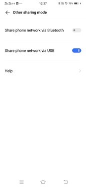
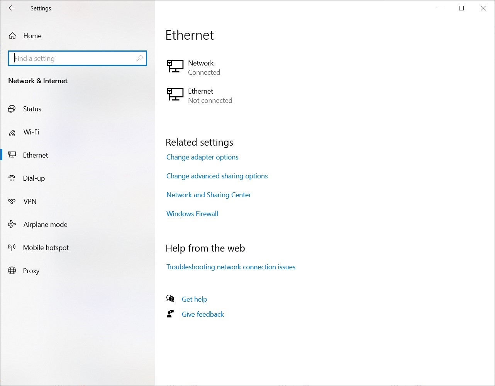
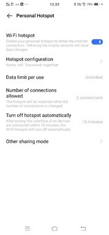

Introduction
bb1840e4-5425-49a3-9d75-477b8f016ff8
Welcome to the Mobile Security Solutions Practice Lab. In this module, you will be provided with the instructions and devices needed to develop your hands-on skills.
dc640c20-9434-45ea-b7c2-6d4d6a196bfc
Learning Outcomes
In this module, you will complete the following exercises:
- Exercise 1 - Connection Methods and Receivers
- Exercise 2 - Mobile Device Management (MDM)
- Exercise 3 - Mobile Devices
- Exercise 4 - Enforcement and Monitoring
- Exercise 5 - Deployment Models
After completing this module, you should have further knowledge of:
- Cellular
- Wi-Fi
- Bluetooth
- Near-field Communications (NFC)
- Infrared
- USB
- Point-to-Point
- Point-to-Multipoint
- Global Positioning System (GPS)
- Radio Frequency Identification (RFID)
- Application Management
- Content Management
- Remote Wipe
- Geofencing
- Geolocation
- Screen Locks
- Push Notifications
- Passwords and Pins
- Biometrics
- Context-aware Authentication
- Containerization
- Storage Segmentation
- Full Device Encryption
- MicroSD HSM
- MDM/Unified Endpoint Management (UEM)
- Mobile Application Management (MAM)
- SEAndroid
- Third-party App Stores
- Rooting/Jailbreaking
- Sideloading
- Custom Firmware
- Carrier Unlocking
- Firmware Over-the-air (OTA) Updates
- Camera Use
- Short Message Service (SMS)/Multimedia Message Service (MMS)/Rich Communication Services (RCS)
- External Media
- USB On the Go (OTG)
- Recording Microphone
- GPS Tagging
- WiFi Direct/Ad Hoc
- Tethering
- Hotspot
- Payment Methods
- Bring Your Own Device (BYOD)
- Choose Your Own Device (CYOD)
- Corporate-Owned, Personally Enabled (COPE)
- Corporate-Owned, Business Only (COBO)
- Virtual Desktop Infrastructure (VDI)
Exam Objectives
The following exam objectives are covered in this lab:
3.5 Given a scenario, implement secure mobile solutions.
- Connection Methods and Receivers
- Mobile Device Management (MDM)
- Mobile Devices
- Enforcements and Monitoring of …
- Deployment Models
Note: Our main
focus is to cover the practical, hands-on aspects of the exam
objectives. We recommend referring to course material or a search engine
to research theoretical topics in more detail.
Lab Duration
It will take approximately 1 hour to complete this lab.
6cde82b4-969e-4ba2-9a1b-b030a82e21d0
Help and Support
For more information on using Practice Labs, please see our Help and Support page. You can also raise a technical support ticket from this page.
Click Next to view the Lab topology used in this module.
d2c53300-f951-45a9-9aa4-3d4ecae69e11
Lab Topology
This module contains supporting materials for Security+.
Click Next to proceed to the first exercise.
<
Home |
README >
CompTIA Security+ Practice Labs
Exercise 1 - Connection Methods and Receivers
Mobile devices have various options to share data. In
some cases, two mobile devices can be kept near to each other, and data
can be sent from one to the other. For example, two mobile devices may
share data over a Bluetooth connection. On the other hand, a mobile
device may simply need to download a file from cloud storage. For this
purpose, you may have to use a cellular or wireless method to download
the file. Even though there is no right or wrong method to share
information, it may depend on the need and scenario type.
In this exercise, you will learn about connection methods and receivers.
Learning Outcomes
After completing this exercise, you should have further knowledge of:
- Cellular
- Wi-Fi
- Bluetooth
- Near-field Communications (NFC)
- Infrared
- USB
- Point-to-Point
- Point-to-Multipoint
- Global Positioning System (GPS)
- Radio Frequency Identification (RFID)
Your Devices
This exercise contains supporting materials for Security+.

Cellular
A cellular network is the type of network that
provides network and data services to mobile devices. In this context,
data services are the amount of data that a mobile device can consume
while using the Internet or its services, such as audio and video.
A cellular network makes use of the telephony
circuits that are divided into cells. A cellular network covers a large
area, such as a country. The cells within the cellular network are
designed to cover a specific location within the larger area. Even
though 3G is now almost obsolete, several cellular service providers are
still being used for backward connectivity. While 4G is the current
cellular standard, 5G is the next version, but it is not standardized
yet.
Wi-Fi
Wi-Fi or wireless networks allow mobile devices to
connect and move around. When there is no cellular connectivity, these
devices can connect with a wireless network and use Internet services.
There are different types of wireless networks that use the 2.4 to 5 GHz
spectrum. Each type of wireless network also offers a different speed.
Note: Types of wireless networks are covered in detail in the Implementing Wireless Security Configurations module.
Bluetooth
Bluetooth is a wireless protocol that has a limited
range. An older version of Bluetooth, up to 4.2, can connect to other
Bluetooth devices within the 32-feet or 10 meters range. However, the
recent version, which is 5.x, can connect to devices even 200 feet or 60
meters. Bluetooth uses the 2.4 GHz frequency band, which is the same as
used by some wireless networks.
Nowadays, several devices have Bluetooth features.
For example, there are printers, tablets, watches, and headphones or
earplugs that have Bluetooth capability. You need to pair two Bluetooth
devices for them to communicate with each other. Let’s consider the
example of two mobile devices. The first one finds the second Bluetooth
device and initiates the pairing. The first mobile device then sends a
pairing request and a key that the second mobile device needs to accept.
Once the second mobile device accepts the pairing, the pairing process
is complete. The second mobile device, while pairing, can choose to
share contacts and call history with the first mobile device.
Near-field Communication (NFC)
Near-field Communication (NFC) is a method to
establish connectivity within limited proximity, which is about 3.9
inches or 10 cm. Both devices need to have NFS capability. When both the
devices are brought within said proximity, the connection is
established. Then, both mobile devices can share pictures, contacts, and
other data with each other.
Other than mobile devices, other devices in the
market use NFC. For example, instead of swapping your credit card in
shopping malls, it is flashed within the proximity of the credit card
machine. A connection is established, and then the amount is charged to
the credit card. However, both the credit card and the credit card
machine need to have NFC capabilities.
Infrared
Infrared is a type of radiant energy that is not
visible to humans. However, a receiving device with an infrared port
receives the infrared and performs a designated action. For example, a
TV remote has infrared that is used to perform certain actions on the
TV. You can turn on, change channels, increase and decrease volume, and
even turn off the TV.
The receiving device must be in clear sight to
receive inputs from an infrared device. A solid wall or object will make
the infrared light bounce back, and the receiving device will not
receive the signal. For example, if someone stands in front of the TV
and you try to change the channel, you cannot do it. This is because the
infrared signals are being bounced back. Some of the mobile devices
also have infrared capability.
USB
USB has been around for several years. Just like any
other technology, it has also gone through several upgrades. Most of the
devices have a Type-A connector. Then, mobile devices had a mini-USB
port. Later, the mini-USB port was upgraded to micro-USB. Of lately,
several mobile devices use a Type-C connector.
Other than the connectors, the USB transfer speeds also evolved with the versions. Here are some key versions:
- USB 1.x - 12 Mbps
- USB 2.0 - 480 Mbps
- USB 3.0 - 5.0 Gbps
- USB 3.1 - 10 Gbps
- USB 3.2 - 20 Gbps
Point-to-Point
A point-to-point connection is made between two
devices. These devices can be two mobile devices. An example of a
point-to-point connection is a telephone call, which one person makes to
another person. In this type of connection, there is a dedicated link
that is established between two devices. The bandwidth of the connection
can be consumed by both the devices that are connected to it. One end
acts as a sender, and the other end acts as a receiver.
Point-to-Multipoint
Unlike point-to-point, there is one sender and
multiple receivers in point-to-multipoint. The bandwidth is shared
between these devices that are connected to this type of connection. One
of the devices acts as a sender, and the remaining devices act as
receivers.
Global Positioning System (GPS)
GPS is a global navigation satellite-based system.
Even though it can have varied uses, such as time synchronization, it is
mainly used for navigation and location tracking. Google Maps uses GPS
to provide the exact location that you look for.
GPS is commonly used nowadays. For example, several
different car models are equipped with GPS systems that helps the person
navigate to a specific location.
Radio Frequency Identification (RFID)
RFID is used for identifying tags that are attached
to different objects. For example, RFID tags can be found on hardware
devices in an organization. The tags help the administrator track these
devices. RFID is a contactless technology that uses radio waves to
identify the tags attached to different objects.
There are two types of RFID tags. The first type is
the one that has its own power source and is known as active tags. The
second type uses the RFID energy that is sent to them for
identification. This type uses this energy to charge itself. An example
of RFID can be found in security systems that authenticate users with a
smart card without touching them. When a user needs to enter a door that
is protected by a security lock, the user simply flashes the smart card
in front of the security lock, and if authenticated, the user is given
access.
<
Home |
README >
CompTIA Security+ Practice Labs
Exercise 2 - Mobile Device Management (MDM)
Most organizations now allow the use of mobile phones
to share their data. However, there is always a risk of data being
stolen or the mobile phone being compromised.
It can be difficult to manage devices, and this is
where Mobile Device Management (MDM) comes in. MDM is a feature used in
an enterprise network to keep a mobile device environment secure. MDM
can control, configure, update, and secure remote mobile devices.
Using MDM, you can block rooting, jailbreaking, or
any other feature you do not want the employees to use. MDM also allows
you to restrict the use of any application other than the approved
applications from your app store.
MDM can be used to enable geofencing, which alerts
the administrator if a user leaves the defined perimeter. Alongside
this, you can also configure asset tracking. Even if the SIM is changed,
you would be able to locate the device.
An organization should also use the following methods when using MDM:
- Enable the Remote Location feature
- Enable the Remote Wipe feature
- Enable encryption
- Allow installation of apps from your organization’s app store
- Allow specific apps to be installed using blacklisting and whitelisting
- Use password enforcement
- Perform device inventory and management
In this exercise, you will learn about mobile security solutions.
Learning Outcomes
After completing this exercise, you should have further knowledge of:
- Application Management
- Content Management
- Remote Wipe
- Geofencing
- Geolocation
- Screen Locks
- Push Notifications
- Passwords and Pins
- Biometrics
- Context-aware Authentication
- Containerization
- Storage Segmentation
- Full Device Encryption
Your Devices
This exercise contains supporting materials for Security+.

Application Management
With the default settings on a mobile device, a user
can install several apps. However, what if an organization does not want
the users to install any apps or install apps only from a list of
authorized ones. In this scenario, the only possible solution is to use
MDM to manage mobile devices. With the use of MDM, you will be able to
restrict the use of any application other than the approved applications
from your app store.
Even though there are specialized Application
Management applications that help you achieve this goal, MDM also
includes this feature.
Content Management
When users are carrying mobile devices, content
management becomes a major issue. The organizational information can be
difficult to track on mobile devices. The Content Management feature of
MDM solves this problem for you. You can control the content on the
users’ mobile devices. For example, a user may not be able to download a
file due to access limitations, but at the same time, another user can
download, edit, and upload the file back in the mobile app.
Remote Wipe
One of the key features of an MDM application is
Remote Wipe. If the mobile device containing corporate data is lost, you
can use the Remote Wipe feature to completely wipe the mobile storage,
erase sensitive data and its configuration.
As a precautionary measure, you can enable full
device encryption. This will ensure that the data remains secure and
confidential, even if it is stolen.
Geofencing
Another use of MDM is to enable geofencing. When this
feature is enabled, the administrator receives an alert if a user
leaves the defined perimeter. Geofencing requires the administrator to
define a perimeter, then it can be configured to send an alert if the
user moves out of the perimeter.
For example, geofencing can be used in a secure area
where limited users are allowed. If an unauthorized user enters the
secure area, it can trigger the administrator. Similarly, an
organization may use the geofencing feature to track when users enter or
leave the office premises.
Geolocation
Using the geolocation feature, you can track a mobile
device. The geolocation feature is typically used to collect a variety
of data for different purposes. For example, you can use this method to
collect data from a set of existing customers so that you can find out
how many customers are using your product. Another example could be of a
bank that collects data from existing customers to figure out where to
install an ATM.
Geolocation can work either with the network routing
addresses or using the GPS feature built-in the mobile device. Each
mobile device connected to the Internet has an IP address, which can be
used for geolocation.
Screen Locks
A mobile device can be configured with screen locks
after being idle for a few minutes. Screen locks can be opened using a
password, pin, or pattern recognition method. In several mobile devices,
a biometric method can be used to open the screen lock. When a mobile
device’s screen is turned off, or the mobile device is in sleep mode,
you need to unlock the screen before getting into the mobile device.
Using a screen lock ensures that an unauthorized user
cannot open the mobile device and read through the information stored
on it.
Push Notifications
Push notifications are used by mobile apps to
indicate a message to a user. Push notifications intend to inform the
user about a specific action or task that has been performed or needs to
be performed. For example, if you are using an Android mobile device,
you may have received a message on the screen that an upgrade is
available. This message is a push notification.
Another example can be a notification from a game
that is installed on the mobile device. You may receive a notification
that you have received 100 gold coins in the game.
Passwords and Pins
The same way a person can log onto an operating
system on a laptop or a desktop, they can configure a password or pin to
be entered to give access to their mobile device. Every time a person
wants to access the mobile device, they must enter either the password
or the pin. This keeps unauthorized users from accessing information on
said device.
It is important to note that you have to then perform
a factory reset if the password or pin is lost. Other than a password
or pin, most mobile devices also have the pattern recognition feature to
draw a specific pattern on the mobile device screen before it can be
unlocked.
When managing the mobile device using MDM, you can
enable the mobile device to be remotely wiped if a certain amount of
incorrect passwords or pins have been entered.
Biometrics
Several types of mobile devices are enabled with
biometric features, such as fingerprint scanning and face recognition. A
user can either enable a password, pin, pattern recognition, or the
biometric method to authenticate themselves on the mobile device.
If you want to use the strongest authentication
method on a mobile device, the correct answer is biometric. Even though a
password or pin provides optimal security in locking the mobile device,
they can be guessed or known by another person. However, biometric
authentication can be considered as a full-proof method.
Context-aware Authentication
Unlike the traditional method of authenticating a
user using a password, context-aware authentication is dynamic. Let’s
look at a typical authentication method. A user provides a username and
password to authenticate himself or herself. Multi-factor authentication
requires the user to authenticate using an additional method.
Context-aware authentication can use several different methods based on
the trust the system has in the user. Context-aware authentication can
also work based on resource utilization. Context-aware authentication,
depending on the user analysis, may increase or decrease the level of
identification.
Some of the key factors that are considered as context-aware authentication:
- MAC address of the destination device
- Username
- Resources being accessed
- Time of the day
- Location of the mobile device
Containerization
Using MDM, you can implement a method so that each
mobile device separates the organization’s applications and data from
the employee’s applications and data. This method is known as
containerization, which creates a separate container on the mobile
device, separating the employee’s applications and data from the
organizations.
Using the containerization feature, you can segregate
the personal and organizational data. You can encrypt only the data
that needs to be used by the organizational applications. You can think
of containerization as a sandbox where only limited options are
available for users. For example, with organizational applications, you
cannot copy information to personal applications. It is also possible
for the administrator to remotely remove information from a mobile
device managed by MDM.
Storage Segmentation
After implementing MDM, you can impose different
access controls on specific data types that an employee has on their
mobile phone. Access control can be imposed on built-in storage as well
as removable media. Using MDM, you can use storage segmentation, which
helps you impose different access controls on specific data types, which
can help you segregate personal and organizational data on a mobile
device. Unlike containerization, which includes applications and data,
storage segmentation only focuses on the data and how it can be secured
by segmentation.
For example, when an employee uses their mobile
device to store organizational information, you have no control over how
the information or applications are stored without MDM. With MDM, you
can create storage segmentation, which can segregate personal from
organizational applications and data.
Full Device Encryption
Full device encryption ensures that the data remains
secure and confidential, even if the data is stolen. This can be
achieved using MDM. When you encrypt a mobile device using full disk
encryption, an encryption key is generated. The user needs to provide
the encryption key to access the data. If the user does not have the
key, then access to the data is not granted.
For example, if the mobile device is stolen, its data
is still secure and remains confidential without removing it from the
device. A person cannot decrypt the phone without the encryption key.
<
Home |
README >
CompTIA Security+ Practice Labs
Exercise 3 - Mobile Devices
When working with mobile devices, security,
management, and control is always a concern. Without any monitoring and
management application, you cannot ensure device security. With the
development in technologies, several new applications, such as MDM, have
come into existence that allows you to secure, manage, and control
devices. Besides the mobile device hardware, you also need to control
the applications and data that reside and are transmitted from it.
In this exercise, you will learn about several technologies that help you secure, manage, and control mobile devices.
Learning Outcomes
After completing this exercise, you should have further knowledge of:
- MicroSD HSM
- MDM/Unified Endpoint Management (UEM)
- Mobile Application Management (MAM)
- SEAndroid
Your Devices
This exercise contains supporting materials for Security+.

MicroSD HSM
The HSM modules are typically available in the form
of a PCIe card, mainly used with the servers considered mission-critical
or hosting mission-critical applications. These cards were also used in
the Public Key Infrastructure (PKI). Because of its size, it cannot be
used with mobile devices. Therefore, to resolve this problem, the
MicroSD form factor, also known as μSD/X, was developed. It fits into
the memory card slot or MicroSD card slot, which is available on almost
all mobile devices.
μSD/X is a hardware security module coming in the form of a microSD card.
MicroSD HSM can perform several functions, such as:
- Encryption key lifecycle, including key import, key use counter, key restrictions, key backup, and restore
- Data at rest and in-process protection
- Support for storage encryption
- Perform hardware-based authentication
- Encryption and decryption
- Support for various encryption algorithms, such as AES, RSA, SHA1, SHA256 and Triple DES
MDM/Unified Endpoint Management (UEM)
Organizations are growing at a fast pace, and so are
the IT assets within these organizations. Whether the organization is in
manufacturing or IT services, IT assets are present in all
organizations. Unlike previously, where the IT assets were limited to
servers, desktops, switches, and routers, you now have employees
carrying mobile devices and laptops. For an organization, it becomes
difficult to manage IT assets. For example, if a sales representative is
on tour most of the time, there is no guarantee that his laptop is
being updated with the latest patches.
To resolve such a problem, you can implement Unified
Endpoint Management (UEM) to track the IT assets. Some of the key
features that can help the IT administrator manage and administer IT
assets are:
- Operating system deployment
- Software deployment
- Remote management
- License management
- Software and hardware inventory
- Updates management
These are some of the key features of UEM. An administrator can use UEM to perform day to day administrative tasks.
Mobile Application Management (MAM)
Like MDM, MAM is another mobile solution, but it
focuses on application management rather than mobile hardware. Using the
MAM solution, you can manage an entire app lifecycle on a mobile
device, which starts with installation and ends with the removal or
deletion of the app from a mobile device.
In the app lifecycle, you can perform certain tasks, such as:
- Manage licenses
- Define and manage permissions
- Perform configurations
- Enforce access policies on apps
- Perform remote management
SEAndroid
SEAndroid or Security-Enhanced Android is built upon
SELinux, which is used to implement Mandatory Access Control (MAC) in a
Linux system. Using SELinux, SEAndroid performs the same task of
implementing MAC on the following:
- System services
- Applications and their data
- System logs
With the use of SELinux in the backend, it can keep
tight control of the Android environment and therefore, if there is a
malicious app, it can reduce any kind of malicious impact.
By default, SEAndroid works in the enforcing mode,
which logs actions that attempted to violate the SELinux policy. These
actions are then logged to dmesg and logcat. SELinux in SEAndroid works with the denial principle. Anything that is not explicitly allowed is denied by default.
<
Home |
README >
CompTIA Security+ Practice Labs
Exercise 4 - Enforcement and Monitoring
In an enterprise environment, it is essential to
monitor mobile devices. One malware-infected mobile device can be the
reason for a major data breach. There are several methods that mobile
device users can use to manage and control their own devices. For
example, a user may simply load an unknown and malicious app onto a
mobile device. Without having appropriate controls in place, it would be
difficult for an administrator to control such issues.
In this exercise, you will learn about the enforcement and monitoring of mobile devices.
Learning Outcomes
After completing this exercise, you should have further knowledge of:
- Third-party App Stores
- Rooting/Jailbreaking
- Sideloading
- Custom Firmware
- Carrier Unlocking
- Firmware Over-the-air (OTA) Updates
- Camera Use
- Short Message Service (SMS)/Multimedia Message Service (MMS)/Rich Communication Services (RCS)
- External Media
- USB On the Go (OTG)
- Recording Microphone
- GPS Tagging
- WiFi Direct/Ad Hoc
- Tethering
- Hotspot
- Payment Methods
Your Devices
This exercise contains supporting materials for Security+.

Third-party App Stores
Whether you are an iPhone or Android phone user, you
would have downloaded apps from a centralized location known as the app
store. In an organization, these are considered third-party app stores
as they reside outside the organization’s network. Depending on the type
of mobile device or phone users use, they can freely download and
install the app from their respective app stores. This works fine in the
personal scenario.
However, it becomes difficult in an organization to
control such a scenario because the users are also using
organization-specific apps and data on the same mobile device. A user
may download a malicious app that can compromise the mobile device, and
therefore, the organizational data can be tampered with or stolen. To
resolve this situation, you can use MDM to control the apps installed on
the mobile device.
Rooting/Jailbreaking
Every Android and iOS device has certain operating
system controls limiting its users' capabilities to perform certain
functions. A user can install, update, or delete apps, but the users
cannot perform operating system level tweaking or modifications. For
example, a user cannot unofficially upgrade the operating system or
undelete files that have been deleted. For such tasks, the user needs to
have root-level permissions.
Rooting or jailbreaking is removing or bypassing the
operating system's security controls, which can either be Android or
iOS. In the Android world, this process is known as rooting. In the iOS
world, this process is known as jailbreaking. The fundamental concept
for both remains the same, which is to remove or bypass the security
controls to gain root-level privileges. However, with MDM, you can block
rooting or jailbreaking.
Sideloading
The sideloading method uses an alternate method to
install apps on Android devices rather than download and install it from
an authorized app store. A user can use a USB On-the-Go (OTG) method to
install an app. A USB with an unauthorized app can be plugged into the
mobile device with either a Type-C or MicroUSB converter.
For example, a user wants a game app, but the app
store has a limited version. The user finds a full version on the
Internet, downloads it, and installs it using the USB OTG method. Even
though this method works fine, there are possibilities that the user may
end up installing a malicious app.
Custom Firmware
Each mobile device comes with a firmware that has
certain functionality. However, you may want to install a custom
firmware that gives you additional privileges. Even though it cannot be
confirmed that a custom firmware may work. Even if it works with a
specific mobile device, several security loopholes can make the mobile
device vulnerable. Such firmware updates should be stopped with
applications, such as MDM.
Carrier Unlocking
Specifically, mobile phones or devices are provided
by the mobile service provider or the carrier in the United States.
These devices are in a locked state, which means that they work with a
SIM from a specific carrier but not with the others. You would typically
buy a bundled deal in which you get the mobile device along with a SIM
and connection. If you switch to another carrier, the same mobile device
does not work.
There is a process of detaching the mobile device
from the carrier. If you complete the process successfully, the mobile
device is detached from the service provider, and then you can use SIMs
from other service providers on the same mobile device.
Firmware Over-the-air (OTA) Updates
Like any electronic device, such as laptops or
cameras, mobile devices also have a firmware. When you purchase a mobile
device, it would have a specific version of the firmware. However, a
few months later, the vendor may release another firmware that needs to
be updated on the mobile device. The vendor pushes the update to the
user’s devices, which is done through an automatic method.
The user may choose to perform this task manually.
Automatic or manual methods can be configured in the settings of the
mobile device. OTA refers to cellular updates. OTA cannot be performed
if you disable mobile data or are not connected to a wireless network.
Camera Use
Almost all mobile devices are equipped with cameras,
which can be used to take photos or videos. However, if an organization
owns the device, it can be a serious concern if the camera is used for
inappropriate photos or videos that are not legal.
Also, another concern with camera use is that the
user may use it for personal photos. If the device is managed by MDM and
is lost, the administrator can simply perform a remote wipe, removing
personal photos and videos.
Short Message Service (SMS)/Multimedia Message Service (MMS)/Rich Communication Services (RCS)
Since the initial invention of the mobile device, SMS
has been a part of it. Even today, SMS is still available over a
cellular network. It is a limited service that allows you to send a
message of 160 words. You can only send texts in SMS. MMS and RCS are
advanced versions of SMS. MMS allows you to send photos, audio files,
and contact files. There is no character limit in MMS, but there is a
message size limit, which is 300 KB. Unlike SMS, which is a feature
found in all mobile devices, MMS must be supported by the mobile device.
RCS is an advanced version of MMS. RCS supports
photos, audio files, videos, location information, emojis. RCS is widely
used by organizations to share information, such as product delivery
alerts.
It is wise for organizations to put a policy that stops the misuse of SMS/MMS/RCS.
External Media
Any external device that can store data is known as
external media. You can have a camera with limited storage to store
data, such as pictures. You can have other external devices, such as a
USB drive, hard drive, or even a smartwatch that can store data. With
the range of external media available, the users can carry data in and
out of the organization.
However, when these external devices move the data in
and out of the organization, there is always a chance of malware being
brought into the organization. It is difficult to control such devices
unless you have a centralized solution to monitor the use of such
devices.
USB On The Go (OTG)
When a mobile device can connect and read data from a
USB drive without a desktop or laptop, this method is called USB OTG.
In this method, you directly connect the USB with the device, such as a
mobile phone, with a microUSB or Type-C port. The USB devices, such as a
USB drive, have a Type-A or full-size USB connector. Therefore, you
need either a microUSB or Type-C USB converter. However, it depends on
the mobile device that you have.
Many USB drives have dual-face, which means a Type-A
connector, and another side is typically a microUSB connector. These are
specifically designed to work with mobile devices that have microUSB
ports.
Recording Microphone
Several devices now have the capability of using an
in-built microphone. For example, most of the laptops have in-built
microphones that can be used for recording conference calls. Even mobile
devices and smartwatches have the capability of recording
conversations. In such a scenario, important and critical conversations
can be recorded without the other party’s knowledge and shared with
third-parties.
GPS Tagging
GPS tagging or Geotagging is a method of embedding
location information into photographs. Several mobile devices have the
capability of geotagging. When this feature is enabled, it automatically
embeds the geotagging information into the photograph's metadata. This
means that anyone who gets their hands on the photograph can find the
location information. Geotagging feature should be disabled unless it is
required.
WiFi Direct/Ad Hoc
The administrator controls infrastructure mode and
all the traffic that passes through an access point. In the Wi-Fi Direct
mode, devices can communicate directly with each other without an
access point. For example, you need to configure a small wireless
network in which devices can connect and authenticate using a PIN. You
need to configure Wi-Fi Direct method in this scenario because the
devices do not need an access point to communicate.
In the ad hoc mode, devices connect in a mesh network
as a group of peers. In this mode, the devices need an access point to
communicate with each other.
Tethering
When you connect your mobile phone to your laptop or
desktop via a USB cable and share the mobile Internet connection, this
method is called tethering. The mobile device needs to have USB
tethering capability.
Figure 4.1 Screenshot of Android: Showing the USB tethering option in Android phone settings.
When you enable this feature and connect the mobile
to the laptop via the USB cable, it connects to the Internet. In Windows
10, you get a Connected status, which is shown as Network.
Figure 4.2 Screenshot of Windows 10: Showing the system connected using the USB tethering option.
Hotspot
A hotspot is sharing a mobile connection with other
mobile devices, such as mobile phones and tablets. You can also connect a
laptop and even a desktop if it has a wireless network adapter. A
hotspot is generally enabled when you are on the move or do not have any
other connecting methods to the Internet. Often, you can find hotspots
in hotels and airports.
It is important to note that when a mobile phone has
hotspot enabled, its Internet data package is being used. You can
exhaust the Internet data package by downloading large files. It also
drains the battery of the mobile phone that has hotspot enabled.
Smartphones have hotspot capability, but you need to
have an Internet data package to share an Internet connection using a
hotspot. When you enable a hotspot, you can use various features that
may be available on your phone. For example, you can limit the number of
users or even the daily data limit. Other than this, you can also set
the hotspot to turn off automatically after it is idle for a certain
time, such as 10 minutes.
Figure 4.3 Screenshot of Android: Showing the Wi-Fi hotspot enabled in Android settings.
Payment Methods
Several users use their mobile devices to make online
payments. For example, you may be paying electricity bills or
purchasing on an E-commerce website. However, you should ensure that you
do not connect to an open or public hotspot when making such a payment.
The mobile app that you are using should be from a trusted vendor.
Several small vendors do not perform enough testing on their mobile
apps, which means that these apps can have vulnerabilities that can be
exploited. If possible, an external reader should be used to perform
online transactions through mobile devices.
<
Home |
README >
CompTIA Security+ Practice Labs
Exercise 5 - Deployment Models
In a dynamically changing IT environment, employees
cannot be constrained to their workstations and work. Organizations have
started to expand, and such expansions require employees to move around
between different offices and meet domestic and international clients.
Carrying data becomes a necessity.
Organizations have started to allow employees to use
mobile devices to connect to the organization’s network and carry data.
However, different organizations follow different models. In this
exercise, you will learn about different deployment models for mobile
devices.
Learning Outcomes
After completing this exercise, you should have further knowledge of:
- Bring Your Own Device (BYOD)
- Choose Your Own Device (CYOD)
- Corporate-Owned, Personally Enabled (COPE)
- Corporate-Owned, Business Only (COBO)
- Virtual Desktop Infrastructure (VDI)
Your Devices
This exercise contains supporting materials for Security+.

Bring Your Own Device (BYOD)
Organizations might allow you to bring your own
device for official use. In this deployment model, the employee or the
user brings the device of their own choice. The organization does not
mandate a specific device that the employee can use. Also, the
organization does not maintain any kind of control over the BYOD
devices.
However, the organizations need to ensure that any
corporate data on the mobile phone is secure. To safeguard the data,
mobile phones must be encrypted. Most organizations use MDM to control
the BYOD devices, which means that the data is encrypted and if the
device is lost, using MDM, a remote wipe can erase the contents of the
device.
Choose Your Own Device (CYOD)
In CYOD, the organization allows the employees to
choose a device from an available list. There are pre-approved devices
that are part of the list, and the employee must choose from this list.
The employee can either purchase the device from the organization or pay
rent. However, the organization has complete control over the mobile
device, which means that it controls the device and its usage in fully
locked down mode.
Corporate-Owned, Personally Enabled (COPE)
The organization provides the mobile device to the
user. As a user, you can use the device for your reasons. However, the
device is fully controlled by the organization. Even though the users
can use the device as they like, it is in a continuously monitored
state, which means that the organization controls security.
A COPE device is provisioned and configured by the
organization, but the user can still install more apps and carry their
data. This means that the COPE devices are not in a fully locked down
mode.
Corporate-Owned, Business Only (COBO)
In COBO, the organization not only provides the
device but also controls and manages the devices. The applications and
the data also belong to the organization. The COBO devices are strictly
in control of the organizations. Most of the time, the COBO devices are
configured in a kiosk mode where only certain applications work. The
COBO device user cannot install or invoke any other application other
than the allowed ones. The COBO devices are always in a fully locked
down mode.
Virtual Desktop Infrastructure (VDI)
A virtual desktop infrastructure (VDI) allows users
to access their virtual desktop environment from their desktops and
mobile phones. The users can log on from anywhere as long as there is
connectivity to the VDI environment. The users will connect to the VDI
environment from anywhere and get the same desktop, data, and
applications.
The virtual desktops are stored on centralized
servers. Users connect to the centralized server using their
credentials, and the user-specific desktops are displayed. This
environment works best when the users do not have fixed desktops, such
as in Business Process Management (BPM). Users can use any system and
connect to the VPI server and get the same environment.
There are several benefits that an organization gains
with the implementation of VDI. The first benefit is centralized
management. Everything, including the virtual desktops, data, and
applications, is stored on the server. You can patch or manage them in a
central location. The second benefit is security. The data is stored on
the centralized server, not on the local systems or devices. If a local
system or device is compromised, the data is still safe on the server.
The third benefit is cost-saving as there is a cost of running and
maintaining the server. The organization does not have to invest in
buying high-end user devices.
7429868b-128c-4069-95a9-7246a6a9e5a3
d31298f5-3011-4089-bf06-fbf08c44a7f9
Keep all devices that you have powered on in their current state and proceed to the review section.
Review
Well done, you have completed the Mobile Security Solutions Practice Lab.
c6e74811-6d1f-4779-94c2-34fcca239022
2dd3c819-8af6-41a5-99e0-3a2299e446fd
7798b2ca-80c6-47a3-89d2-cad9edb3bf65
6feed7b4-8e72-4ef3-b82f-10e725fb17b7
8ecb6ebd-d4e7-4a73-8267-332e4b2af674
225f5a68-0377-4551-9864-f95b393f7e06
aaaaaaaa-1111-1111-1111-193f35a24fe3
Summary
You completed the following exercises:
- Exercise 1 - Connection Methods and Receivers
- Exercise 2 - Mobile Device Management (MDM)
- Exercise 3 - Mobile Devices
- Exercise 4 - Enforcement and Monitoring
- Exercise 5 - Deployment Models
You should now have further knowledge of:
- Cellular
- Wi-Fi
- Bluetooth
- Near-field Communications (NFC)
- Infrared
- USB
- Point-to-Point
- Point-to-Multipoint
- Global Positioning System (GPS)
- Radio Frequency Identification (RFID)
- Application Management
- Content Management
- Remote Wipe
- Geofencing
- Geolocation
- Screen Locks
- Push Notifications
- Passwords and Pins
- Biometrics
- Context-aware Authentication
- Containerization
- Storage Segmentation
- Full Device Encryption
- MicroSD HSM
- MDM/Unified Endpoint Management (UEM)
- Mobile Application Management (MAM)
- SEAndroid
- Third-party App Stores
- Rooting/Jailbreaking
- Sideloading
- Custom Firmware
- Carrier Unlocking
- Firmware Over-the-air (OTA) Updates
- Camera Use
- Short Message Service (SMS)/Multimedia Message Service (MMS)/Rich Communication Services (RCS)
- External Media
- USB On the Go (OTG)
- Recording Microphone
- GPS Tagging
- WiFi Direct/Ad Hoc
- Tethering
- Hotspot
- Payment Methods
- Bring Your Own Device (BYOD)
- Choose Your Own Device (CYOD)
- Corporate-Owned, Personally Enabled (COPE)
- Corporate-Owned, Business Only (COBO)
- Virtual Desktop Infrastructure (VDI)
Feedback
067744a4-4299-4662-b5be-04dbb636a007
Shutdown all virtual machines used in this lab. Alternatively, you can log out of the lab platform.